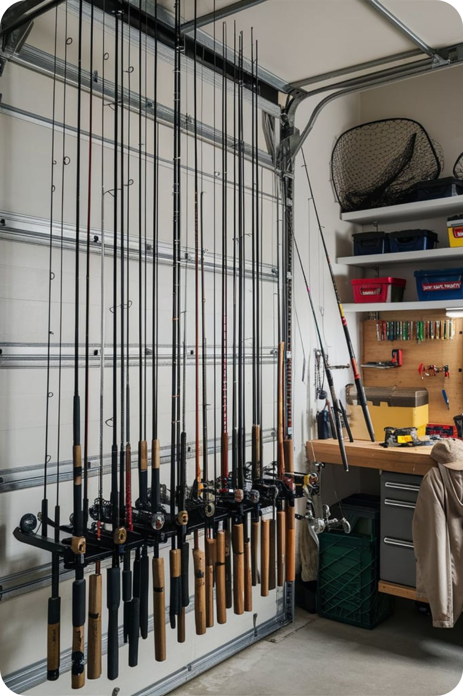
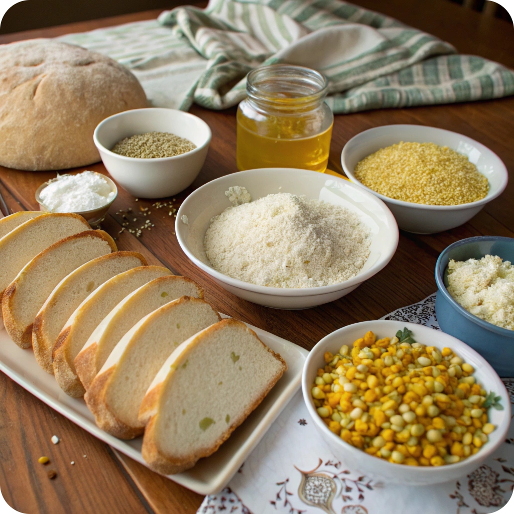
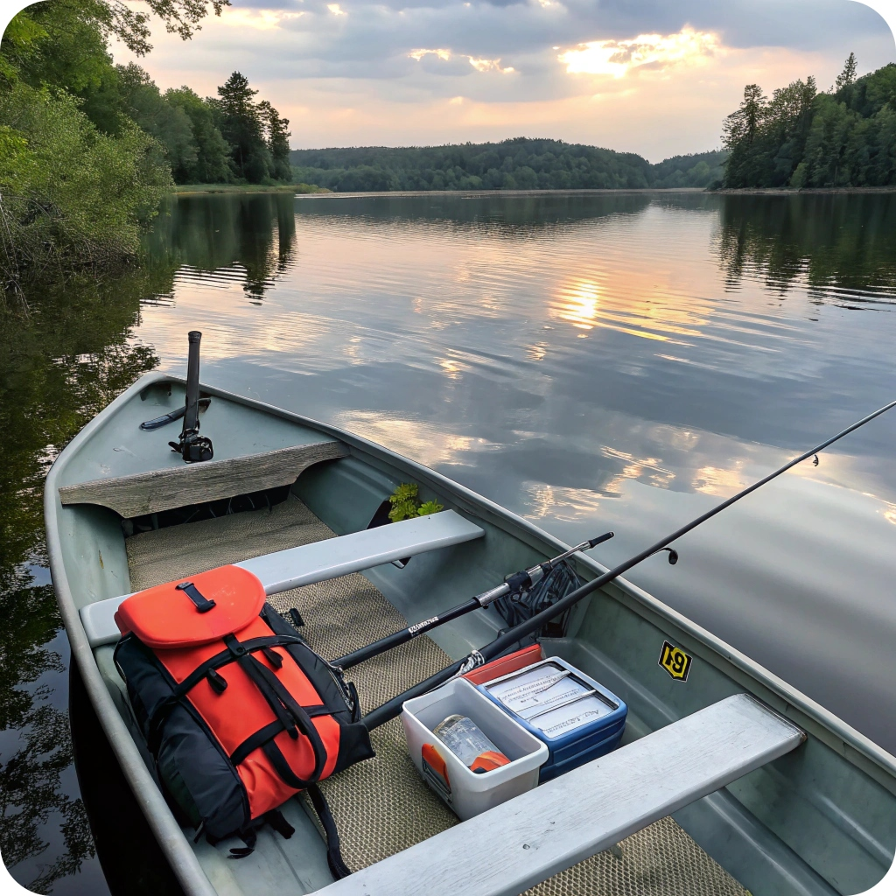
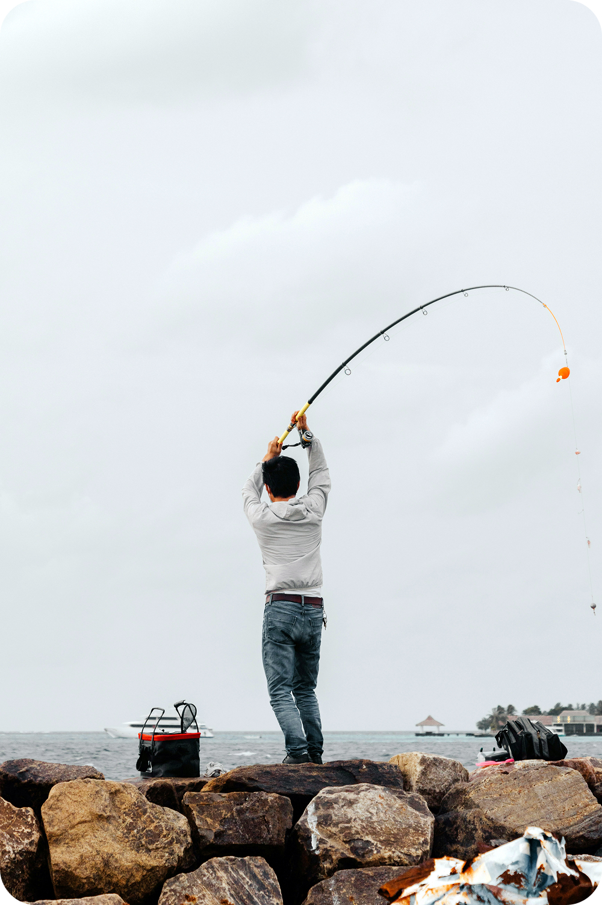
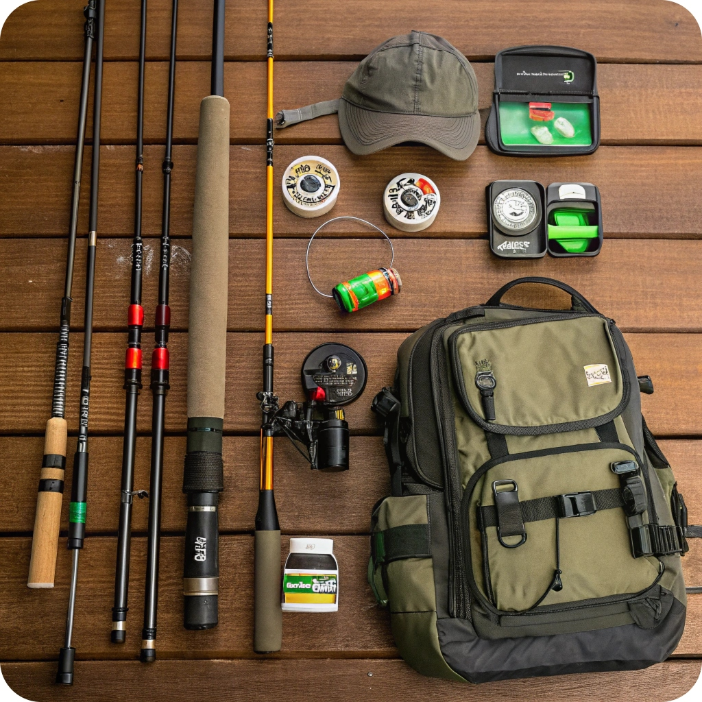
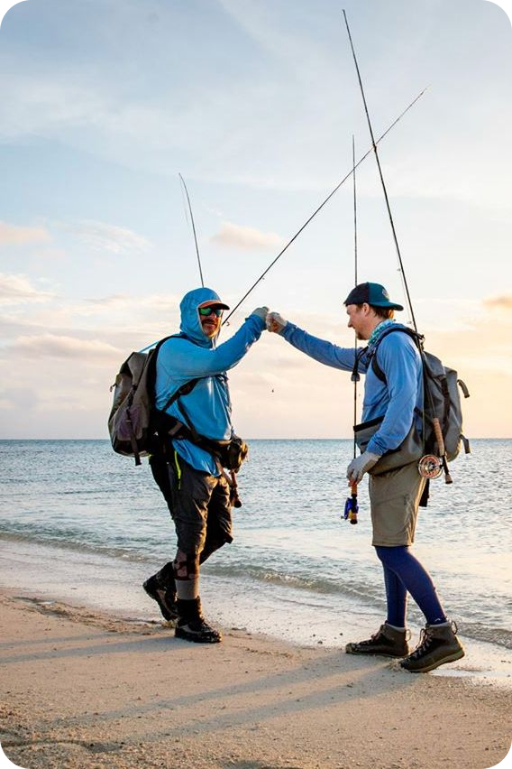
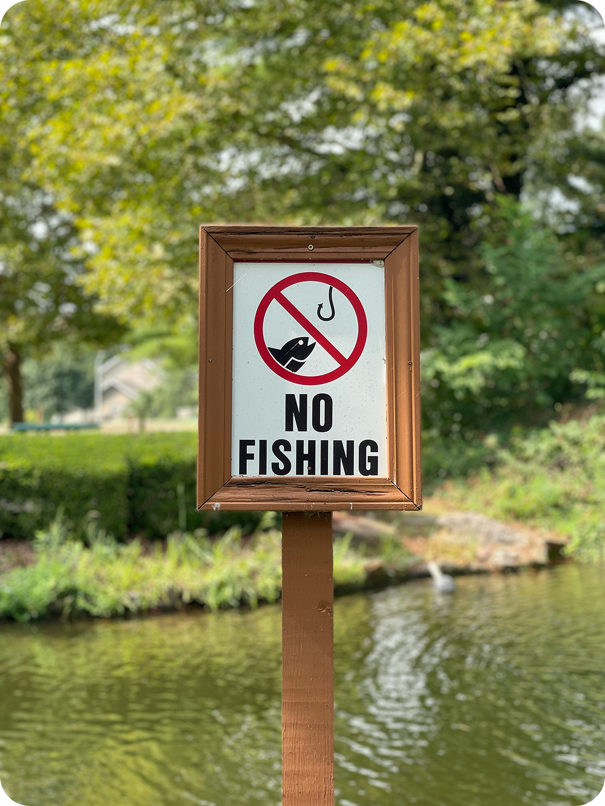

НАШ БЛОГ
-
На какую наживку лучше ловить карася?


- Чтобы поймать карася, важно выбрать правильную наживку.Вот несколько популярных вариантов:
- 1. Перловка - универсальный вариант, который привлекает карася своим запахом и текстурой. Перед использованием рекомендуется отварить.
- 2. Черви - живые черви, такие как дождевые, являются отличной наживкой. Карась не может устоять перед движущейся приманкой.
- 3. Кукуруза - консервированная или вареная кукуруза часто вызывает интерес у карася. Ее сладкий запах привлекает рыбу.
- 4. Тесто - простое тесто или тесто с добавлением ароматизаторов, таких как ваниль или мед, также может быть эффективным.
- 5. Наживка из хлеба - замоченный в воде белый хлеб отлично подойдет для ловли карася.
Выбирайте наживку в зависимости от условий ловли предпочтений местного карася. Удачи на рыбалке! -
Как выбрать идеальную удочку для начинающего рыбака?

- Начинающим рыбакам важно не перегружать себя сложным снаряжением. Удочка должна быть простой, удобной и подходящей под основные условия ловли. Ключевые советы по выбору:
- 1. Тип удочкиДля старта подойдёт телескопическая удочка. Она компактна, легко складывается и не требует сложного обслуживания. Также рассмотрите матчевую или болонскую — они универсальны и хорошо подойдут для поплавочной ловли.
- 2. Длина удилищаОптимальная длина — 3–4 метра. Такой размер позволяет комфортно забрасывать наживку и управлять снастью, особенно если вы рыбачите с берега или на небольшом водоёме.
- 3. МатериалДля новичков подойдут удилища из стеклопластика — они прочные, недорогие и прощают ошибки. Карбон легче и чувствительнее, но стоит дороже и требует аккуратности.
- 4. Тест удилищаТест указывает, какую массу грузила или приманки выдержит удочка. Для начинающих оптимален диапазон 5–25г — универсальный вариант для пресноводной ловли.
- 5. Катушка и лескаЕсли удочка с кольцами, выбирайте безынерционную катушку с передним фрикционом. Леску стоит взять диаметром 0,2–0,25мм — она подходит для большинства видов рыбалки.
- 6. Рукоятка и удобствоОбратите внимание на рукоятку — пробковая или EVA (искусственная пена) приятна в руке и не скользит. Удочка должна хорошо лежать в ладони.
Главное — не гнаться за дорогим снаряжением. Лёгкая, надёжная и удобная удочка поможет вам полюбить рыбалку и сделать первые шаги с удовольствием. -
Приманки своими руками: бюджетные и эффективные рецепты

- Создание приманок в домашних условиях — отличный способ сэкономить и повысить уловистость. Домашние приманки часто ничуть не хуже магазинных, а порой и лучше, особенно если адаптировать их под местные условия.
- 1. Тесто с чеснокомОтлично подойдёт в качестве приманки для карася и карпа.Смешайте 4 ст. ложки муки, немного воды и щепотку соли до густой массы. Добавьте давленый чеснок — он придаст сильный аромат. Скатывайте шарики — и можно ловить.
- 2. Манка с ароматизаторомСварите кашу из манки и воды (1:2), остудите. Добавьте ароматизаторы: ванилин, анис, мед. Получившуюся массу используйте в качестве насадки или основы для прикормки.
- 3. Жмых с панировкойПодходит для ловли леща и плотвы.Смешайте подсолнечный жмых, панировочные сухари и немного глины (для утяжеления). Можно добавить сахар или сухое молоко — это усилит запах.
- 4. Хлеб с подсолнечным масломРазомните мякиш белого хлеба и добавьте немного нерафинированного масла. Скатывайте в шарики — аромат привлекает рыбу на «ура.»
- 5. Каши для прикормкиСварите пшено или перловку, добавьте кукурузную крупу и немного мёда. Это питательная прикормка, которая отлично собирает рыбу к месту ловли.
Экспериментируйте с ингредиентами, подбирайте под конкретную рыбу — и результат не заставит себя ждать. -
Рыбалка с лодки: советы по безопасности и выбору снаряжения

- Рыбалка с лодки открывает доступ к перспективным местам и даёт больше свободы. Но она требует особого подхода к безопасности и подбору снаряжения.
- 1. Безопасность — на первом местеПеред выходом обязательно проверьте состояние лодки: отсутствие проколов, целостность швов, плотность накачки. Наденьте спасательный жилет — даже если хорошо плаваете. Не перегружайте лодку: учитывайте вес рыбака, мотора, снастей и улова.
- 2. Погодные условияПроверяйте прогноз заранее. Сильный ветер, гроза или туман могут быть опасны. Лучше отложить выход, чем рисковать.
- 3. Подбор лодкиДля рыбалки подойдут надувные лодки из ПВХ — они лёгкие, прочные и удобны для перевозки. Если ловите в стоячей воде, подойдёт гребная лодка. На течении — предпочтение моторной с усиленным дном.
- 4. Оснастка и снастиС лодки удобно ловить на донки, спиннинг или поплавочную удочку. Удилище должно быть короче, чем при береговой ловле — 1,8–2,4м. Обязательно возьмите подсак и якорь.
- 5. Дополнительное снаряжениеПолезны эхолот, водонепроницаемый мешок для документов и телефонов, солнцезащитные очки, аптечка. Обязательно — нож или мультитул и запасной весло (если гребная лодка).
Рыбалка с лодки — это свобода и азарт. Главное — правильно подготовиться и соблюдать меры безопасности. Тогда отдых будет не только успешным, но и безопасным. -
Рыбалка на спиннинг: осваиваем технику заброса и проводки

- Спиннинговая ловля — один из самых увлекательных способов рыбалки. Но чтобы ловить эффективно, важно освоить правильную технику заброса и проводки приманки.
- 1. Правильный забросНачинающим стоит начать с верхнего (маятникового) заброса — он самый простой. Держите удилище двумя руками, заведите его за спину и плавно, но уверенно бросайте приманку вперёд. Цельтесь чуть выше линии горизонта — это даст дальность и точность.
- 2. Выбор катушки и лескиИспользуйте безынерционную катушку с лёгким ходом. Леска — плетёнка диаметром 0,12–0,18мм — хорошо передаёт поклёвки и не растягивается, что важно при проводке.
- 3. Основные типы проводки
- Равномерная:ведите приманку с постоянной скоростью. Эффективна для активной рыбы.
- Ступенчатая:делайте пару оборотов катушки, затем пауза — приманка «прыгает» по дну. Подходит для судака и окуня.
- Твичинг:короткие рывки удилищем с паузами. Используется для воблеров, отлично работает на щуку.
- 4. Работа с приманкойВажно не просто крутить катушку, а «оживить» приманку. Меняйте темп, делайте паузы, имитируйте раненую рыбку — хищник реагирует на нестандартное движение.
Спиннинг требует немного практики, но дарит массу эмоций. Освойте заброс, поймите суть проводки — и первая трофейная щука не заставит себя ждать! -
Обзор новинок рыболовного снаряжения: что стоит купить в этом году?

- Каждый год производители радуют рыбаков новыми снастями и аксессуарами. В 2025 году появились интересные новинки, которые уже успели получить положительные отзывы.Вот на что стоит обратить внимание:
- 1. Удилища с антискользящим покрытиемСовременные спиннинги и фидерные удочки обзавелись обновлёнными рукоятками из EVA с текстурированной поверхностью. Они не скользят даже в мокрых руках, что особенно актуально при ловле в дождь или холод.
- 2. Ультралёгкие катушкиПроизводители снизили вес катушек за счёт углепластиковых корпусов, сохранив прочность. Новинки от Shimano и Daiwa отлично подходят для деликатной ловли и дальних забросов.
- 3. Интеллектуальные эхолотыКомпактные модели с Wi-Fi и приложением для смартфона стали ещё точнее. Новые эхолоты показывают рельеф дна, наличие рыбы и температуру воды в реальном времени. Отличный выбор для рыбалки с лодки и берега.
- 4. Многофункциональные рыболовные рюкзакиНовые модели рюкзаков со встроенными ящиками для приманок и креплениями для удилищ стали легче и удобнее. Материалы — водоотталкивающие, с усиленным дном и системой вентиляции спины.
5. Светящиеся поплавки и сигнализаторыОбновлённые LED-поплавки работают до 40 часов и хорошо видны даже в тумане. Новые сигнализаторы поклёвки беспроводные, с дальностью до 100 метров — удобно для фидерной ночной ловли. -
Рыболовные мифы: развенчиваем популярные заблуждения

- В рыбалке, как и в любом хобби, хватает мифов и устаревших советов. Некоторые из них передаются десятилетиями, но на практике давно не работают. Разберёмся с самыми распространёнными.
- 1. «Чем больше наживки — тем больше рыбы»На самом деле избыточное количество наживки может насторожить рыбу. Особенно осторожную — карася или леща. Лучше использовать небольшую, но ароматную и правильно подобранную насадку.
- 2. «Рыба не клюёт в полдень»Многие считают, что клёв бывает только утром и вечером. Но всё зависит от погоды, давления и вида рыбы. Щука, например, часто активна в обед, особенно в пасмурную погоду.
- 3. «Чем дороже снасть — тем больше улов»Цена — не главный фактор. Грамотно подобранная бюджетная снасть может показать отличные результаты. Важнее знание водоёма и повадок рыбы.
- 4. «Если рыба не клюёт — нужно сменить место»Не всегда. Иногда достаточно поменять глубину, проводку или приманку. Часто рыба стоит рядом, но её не привлекает текущая подача.
- 5. «Рыба боится тени от удочки»На глубоководье и при небольшой ряби рыба тень практически не замечает. А вот резкие движения и шум — действительно настораживают.
6. «Червь — универсальная приманка»Хотя червь эффективен, он не всегда лучший выбор. Хищнику чаще интересны живец или силикон, а карп и карась любят сладкие и ароматные насадки. -
Правовые аспекты рыбалки: что нужно знать о правилах рыболовства

- Рыбалка — это не только отдых, но и деятельность, регулируемая законом. Чтобы избежать штрафов и не навредить природе, важно знать основные правила рыболовства.
- 1. Право на бесплатную рыбалкуЛюбой гражданин имеет право ловить рыбу для личных нужд на общественных водоёмах. Но при этом нужно соблюдать установленные нормы и ограничения — например, по количеству снастей и виду рыбы.
- 2. Запретные периоды (нерест)Весной во многих регионах вводится нерестовый запрет. В это время запрещено ловить определённые виды рыбы или использовать лодки. Нарушение грозит штрафом и изъятием снастей.
- 3. Размер и суточная норма уловаСуществуют минимальные размеры рыбы, которые можно забирать. Например, щуку обычно разрешено ловить от 32см. Также есть лимиты по весу или количеству улова в день — в среднем 5–10кг на человека.
- 4. Запрещённые снасти и способыЭлектроудочки, сети, капканы, остроги и динамит — под строгим запретом. Использование таких методов считается браконьерством и может повлечь уголовную ответственность.
- 5. Платные и частные водоёмыНа платных водоёмах действуют внутренние правила. Частная рыбалка без разрешения владельца считается нарушением. Всегда уточняйте условия ловли заранее.
- 6. Нормативные документыОсновной документ — Правила рыболовства, которые делятся по бассейнам: Волго-Каспийский, Азово-Черноморский и т.д. Их можно найти на сайте Росрыболовства.
Уважайте природу, соблюдайте законы, и отдых на водоёме принесёт только положительные эмоции.